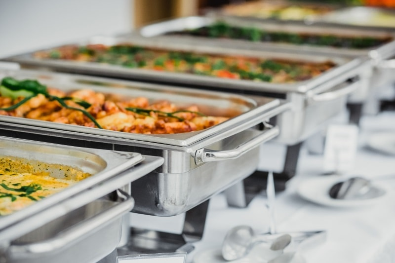

Menu



Give your friends a wedding menu they won't soon forget, and the specialty cocktails everyone will be talking about. It is because, one of the most important factors in your overall wedding is food and drink. It’s also one of the most enjoyed parts of the reception for your guests. While guests may not remember the particular details of your wedding dress or the song that played when you walked down the aisle, they will certainly remember the amazing meal they ate or the type of wedding cake you served. Let’s go over all of the ins and outs of wedding catering. This includes your options for serving the meal and everything you need food, drink, dessert, and even what linens and table items you’re going to need at the wedding reception.